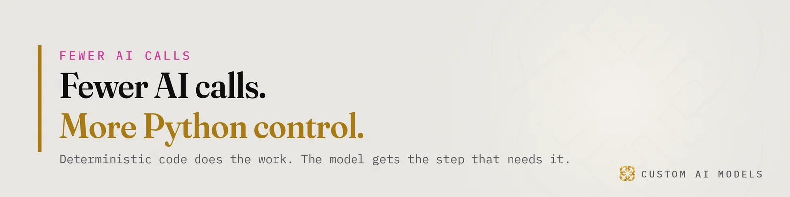
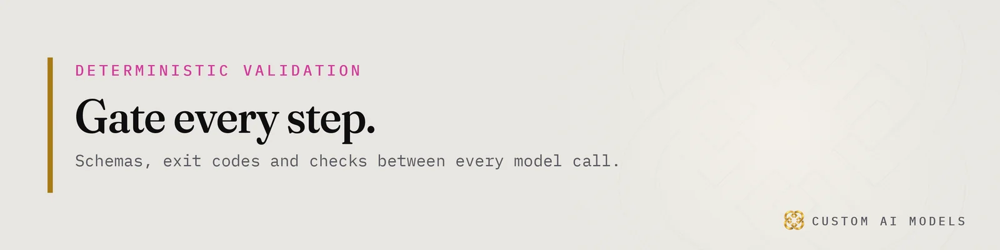
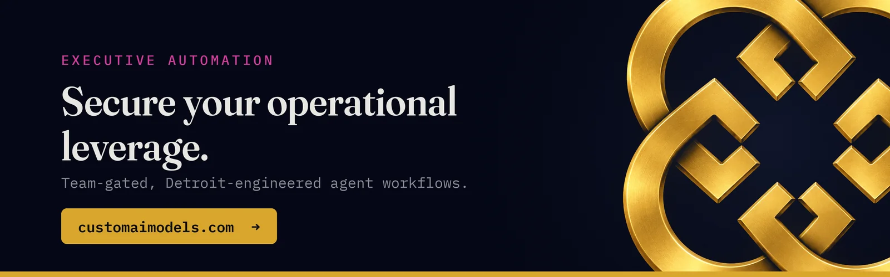

Custom AI Models
Custom AI Models Yeriko Vargas · Founder, Custom AI Models · Oct 2026
Yeriko Vargas · Founder, Custom AI Models · Oct 2026Short answer. Deterministic AI workflows split the job in two. Python code owns routing, schema validation, retries, permissions and exit codes. The language model owns only the fuzzy work, such as reading messy text, and returns a claim that a gate checks. Decoupling the two makes failures traceable, lets you swap models without rewrites, and keeps a wrong guess from reaching a customer.
Why do LLM agents break once they leave the demo?
LLM agents break in production because the model is asked to do jobs that code does better: routing, retries, arithmetic, permission checks and format enforcement. Each of those works most of the time in a demo. Most of the time is a bad contract for a billing system. At Custom AI Models the model is one stage inside a program, and the program owns everything that must come out the same way twice.
You have probably seen the pattern. An agent loop picks a tool, calls it, reads the result, and picks again. Every pick is a fresh sample. Chain enough of them together and the odds of a clean run shrink, with nothing in the logs to show which step drifted.
I have spent 8.5 years in data, and I have been building under this banner since 2022. The failures repeat. Nobody lost money because the model wrote a clumsy sentence. They lost it because the model was allowed to decide something it should never have been asked.

What belongs in deterministic code, and what belongs to the model?
Deterministic code owns anything with one right answer: schema validation, routing rules, access control, retries, idempotency keys, date math and file writes. The model owns language, meaning reading messy input, classifying ambiguous text, drafting and summarizing. If a human could write the rule on an index card, it is code. If the rule needs judgement over fuzzy text, the model gets it, inside a fence.
- Routing: a lookup table picks the next stage, never the model.
- Permissions: RBAC is checked in code before any call is built.
- Output shape: a JSON schema decides if a reply is usable.
- Side effects: only the script writes, sends or deletes.
I covered how every call becomes a claim until a check proves it in Twelve tools, one Python pipeline. This piece sits one layer underneath, on where the dividing line goes.
How do you call claude -p without handing it the controls?
Run claude -p as a subprocess from Python, send the prompt on stdin, and demand JSON back. The orchestrator is a plain script. It builds the input, spawns the call, captures stdout and the exit code, then parses the reply against a schema. The model never sees your routing table and never decides what runs next. It returns a claim, and the script decides what happens to that claim.
Every reply then passes through a short chain of gates:
- Did the process exit with zero?
- Does stdout parse as JSON at all?
- Does the JSON match the schema, field by field?
- Do the values pass business rules, such as known IDs and allowed ranges?
A failed gate is a normal event. The script retries with the validator's error text appended, up to a fixed limit, then exits non-zero and writes the failure to a log. A person reads the log, not a chat transcript. That one habit turns LLM tool calling from a mood into a procedure.
The same shape holds around retrieval. RAG isn't a feature. It's an architecture. goes into the telemetry and evaluation that wrap it.

Why does the build order put the model last?
The build order is fixed: unify the data, model it, gate every step, then add the model. Skipping ahead is how teams end up with an assistant pointed at inconsistent records. The model can only be as reliable as the facts it is handed, and the gates can only check what the data layer makes checkable. So the data goes first and the language model arrives last.
A model on dirty data is a liability with a friendly voice.
This is where data infrastructure earns its keep. Duplicate customers, free-text status fields and three versions of one price list are not model problems. They are SQL problems, and they get fixed in SQL. I wrote the longer version in Your AI didn't fail. Your data did.
Once the records are clean and typed, the gates get simple. A reply that names a customer ID either exists in the table or it does not. No opinion required.
How do you know the split is working?
You know the split works when every failure points at one stage and one cause. Log each call with its input hash, prompt version, exit code, schema result and latency. Then replay a fixed set of cases through the gates whenever you change a prompt or a model. That replay is your LLM evaluation suite, and it runs without a human in the loop.
Watch for data drift too. Upstream systems change field formats without telling anyone, and the first symptom is a rising rate of gate rejections. A rejection counter is cheaper than a customer complaint.
A decoupled system also gives you freedom. The model sits behind one function, so you can swap it for a newer one, run two side by side, or drop it from a stage that never needed it. The gates stay put. Your tests stay valid. That is what production AI systems look like when the program is in charge.
Questions people ask
Does decoupling logic from the LLM make the system less flexible?
No. The model still handles open-ended language work. What you remove is its authority over routing, permissions and side effects. New tasks mean a new stage with its own schema and gates, so you add flexibility in controlled places instead of letting the model improvise everywhere.
Can I keep my existing agent framework and still add gates?
Usually yes. Wrap each tool call and each model reply with a validator that checks schema and business rules, and fail loudly on a mismatch. Start with the steps that write data or message customers. Replace the framework's routing with plain code only where its decisions have burned you.
What should I log to debug a pipeline like this?
Log the input hash, prompt version, model name, exit code, schema validation result, retry count and latency for every call. Store failures with the validator's error text. With those fields you can replay any run, find the stage that drifted, and prove whether a change helped.
Who owns the deterministic layer inside a company?
An engineer or data lead should own it, because it holds the rules the business already trusts: access, pricing, compliance checks. Prompts can belong to whoever knows the domain. Keep the two in separate files with separate review, so a wording tweak can never loosen a gate.
